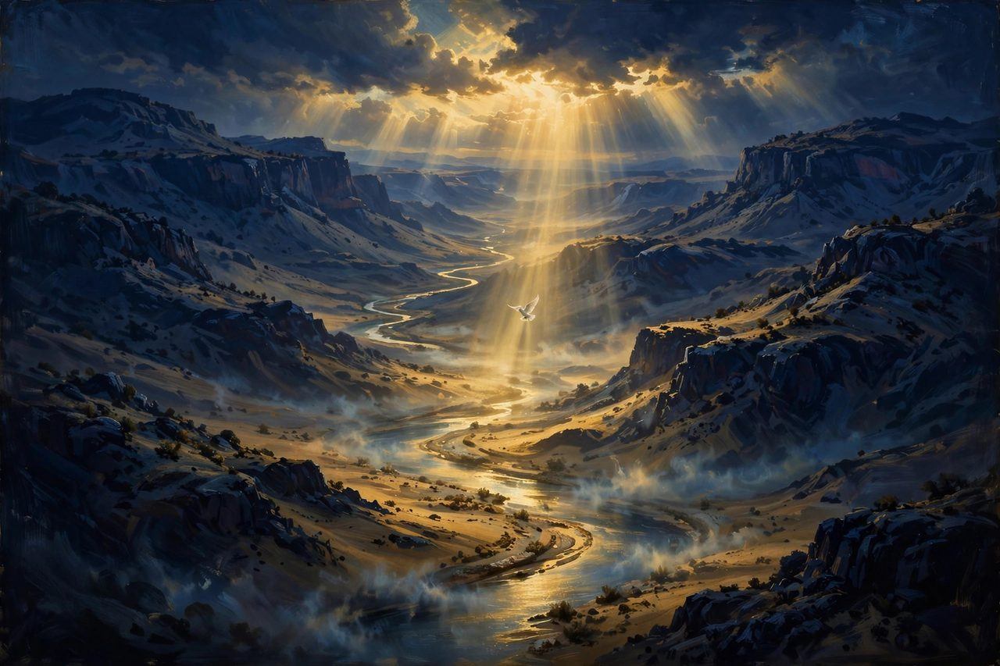
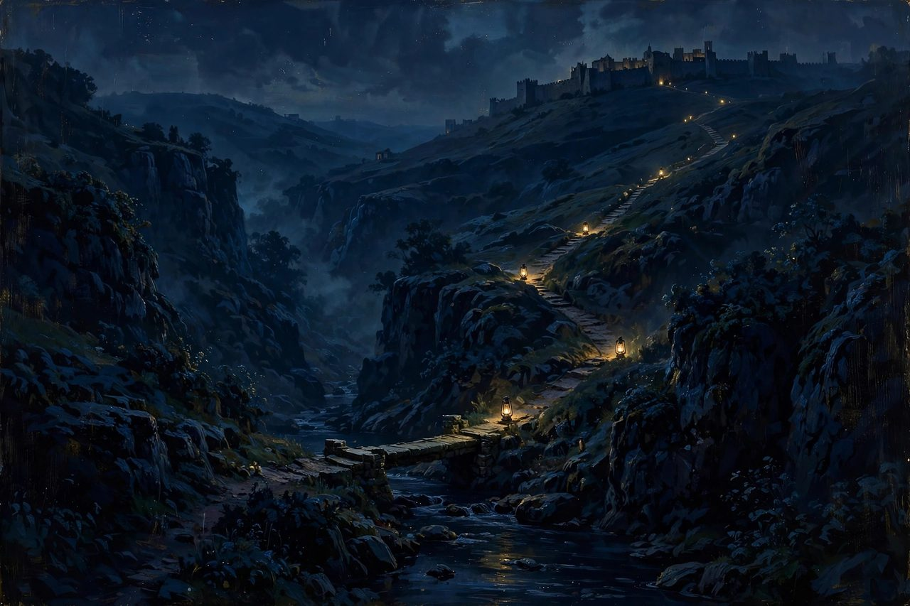
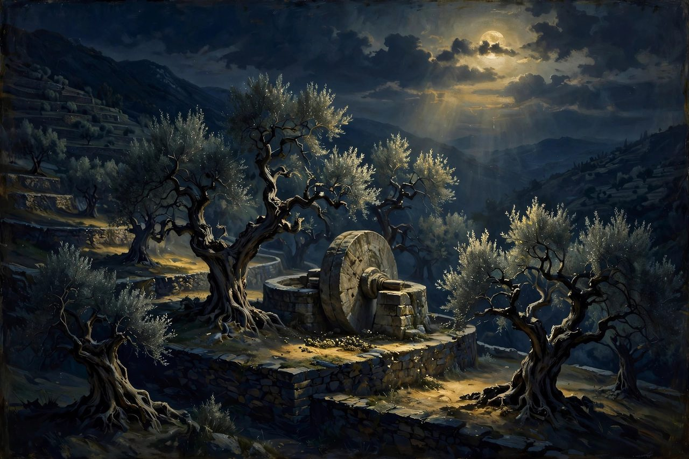
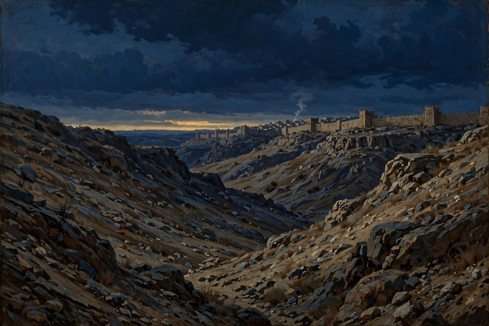
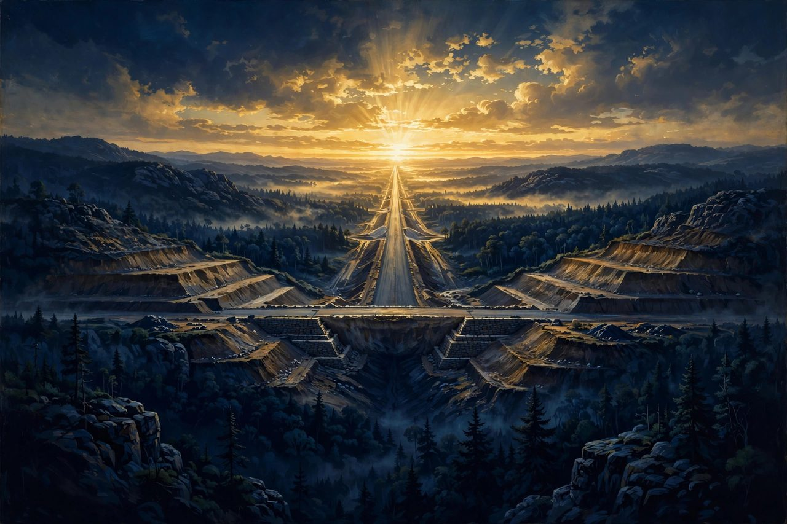

The New Testament valleys are fewer in number than the Old, but every one of them carries weight. Jesus did not do His saving work on the famous mountains of Israel's history — He was baptized in the lowest valley on earth, He wept across a dark ravine at night, and He warned of a valley outside Jerusalem more than any prophet before Him. In these valleys the pattern of the whole Bible comes into focus: God does His deepest work in low places, and He does it through His Son.
The Jordan Valley — Where the Heavens Opened
Scripture: Matt 3:13-17; Mark 1:9-11; John 1:28; John 10:40 The story: John was baptizing at Bethany beyond the Jordan when Jesus came down from Galilee to be baptized by him. As Jesus came up out of the water, the heavens were opened, the Spirit descended like a dove, and the Father's voice declared, "This is my beloved Son, with whom I am well pleased." This happened in the Jordan Valley — the lowest inhabited valley on the face of the earth, hundreds of feet below sea level. The meaning: God chose the lowest place on earth to open the heavens and publicly name His Son. Jesus was not baptized on a summit; He went down into the same water where sinners came confessing, and He identified with them there. What it points to: It points to how salvation works from start to finish — God comes down to us in the low place rather than waiting for us to climb to Him. Every baptism since replays it: buried low, raised up, and the Father well pleased on account of the Son.
The Kidron Valley Crossed at Night

Scripture: John 18:1; 2 Sam 15:23, 30 The story: After the Last Supper, Jesus "went out with his disciples across the brook Kidron" to a garden on the other side, where Judas came with soldiers to betray Him. A thousand years earlier, David had crossed the same Kidron weeping, barefoot, and betrayed by his trusted counselor Ahithophel, as he fled from his own son Absalom. The meaning: The greater Son of David retraced His father's steps — same brook, same darkness, same betrayal by a trusted friend — but David crossed the Kidron to escape death, and Jesus crossed it to walk toward His. What it points to: It points to Christ absorbing into His own suffering every grief His people have ever carried, down to being betrayed by a friend at the table. No one crosses a dark valley that He has not crossed first, and darker.Gethsemane — The Garden at the Valley's Edge

Scripture: Matt 26:36-46; Mark 14:32-42 The story: Between the Kidron Valley and the Mount of Olives stood Gethsemane — a name that means "olive press." There Jesus prayed in agony, His sweat becoming like great drops of blood, and asked, "My Father, if it be possible, let this cup pass from me; nevertheless, not as I will, but as you will." Three times He prayed it, while His closest friends slept a stone's throw away. The meaning: An olive press crushes the fruit under weight so the oil can flow — and that is what happened in this garden. Jesus was not pressed by accident; He submitted to the pressing, and the cup He feared was not death itself but the wrath of God against sin, which He drank down willingly the next day. What it points to: It points to the surrender at the heart of salvation — the Son's "not my will, but yours" is the prayer that undid Adam's rebellion in another garden. And it teaches every believer how to pray in their own valley: honestly about the cup, and settled on the Father's will.The Valley of Hinnom in Jesus's Teaching — Gehenna

Scripture: Matt 5:22, 29-30; Matt 10:28; Matt 23:33; Mark 9:43-48; Jas 3:6 The story: The Valley of Hinnom, just outside Jerusalem's walls, was where Judah had once burned children in sacrifice to Molech — the darkest chapter in the city's history. Jesus took that valley's name, Gehenna, and made it His own word for hell: the place of unquenchable fire where "their worm does not die and the fire is not quenched." He spoke of it more than anyone else in Scripture, usually in the same breath as an invitation to repent and enter life instead. The meaning: The most sober valley in Scripture comes from the lips of the most merciful man who ever lived. Jesus did not warn about Gehenna to frighten people away from God — He warned so plainly because He was on His way to bear its judgment Himself, and He did not want anyone to refuse the rescue. What it points to: It points to the real stakes of every human life and to the greatness of the cross, where Christ endured the fire so that those who trust Him never will. And it points forward to the final judgment, when the valley's picture gives way to the reality it pictured.The Valley Between the Mountains of Luke 3 / Isaiah 40

Scripture: Luke 3:4-6; Isa 40:3-5 The story: When John the Baptist began preaching in the wilderness, Luke says he was fulfilling Isaiah's prophecy: "The voice of one crying in the wilderness: 'Prepare the way of the Lord, make his paths straight. Every valley shall be filled, and every mountain and hill shall be made low... and all flesh shall see the salvation of God.'" John's baptism of repentance in the Jordan Valley was the roadwork beginning. The meaning: Before the King arrived, the landscape itself had to be re-graded — the low and broken lifted up, the high and proud brought down. That leveling is what repentance does to a human heart: no one is too low to be raised, and no one is too high to be humbled. What it points to: It points to the great leveling of the gospel, then and now — in Christ, the valley-dweller and the mountaintop proud stand on the same level ground at the foot of the cross. And it points to the second coming, when the leveling Isaiah promised will be finished in the world itself.← Previous part · Series index · Next part →
The Hope Connection
Meeting others where they are in the Name of Jesus — testimony and teaching on the hope that holds.